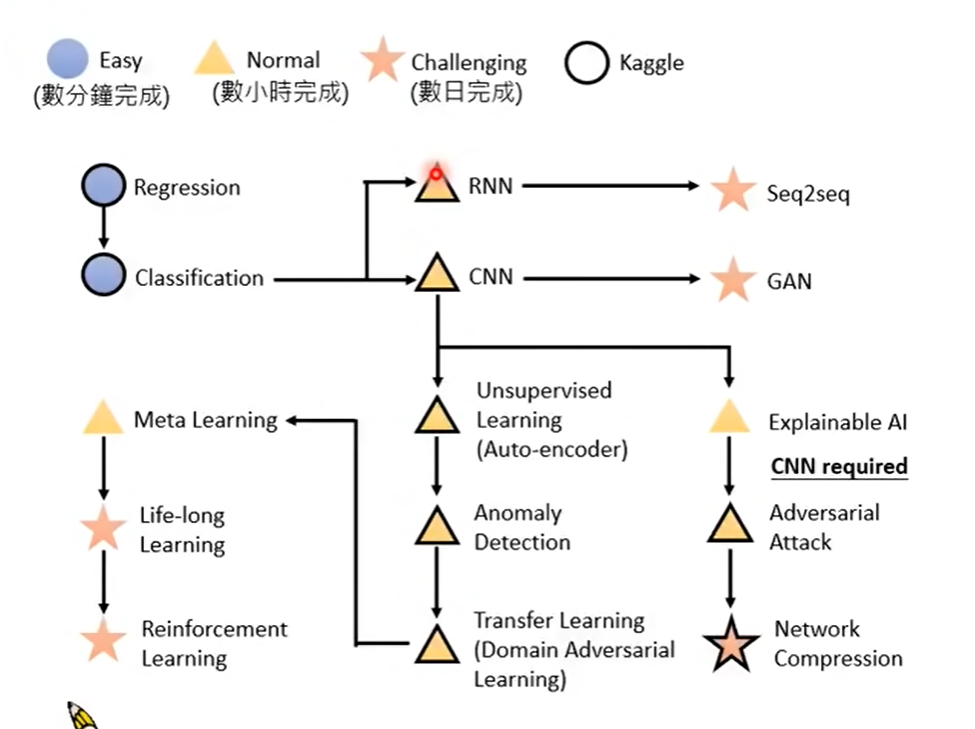
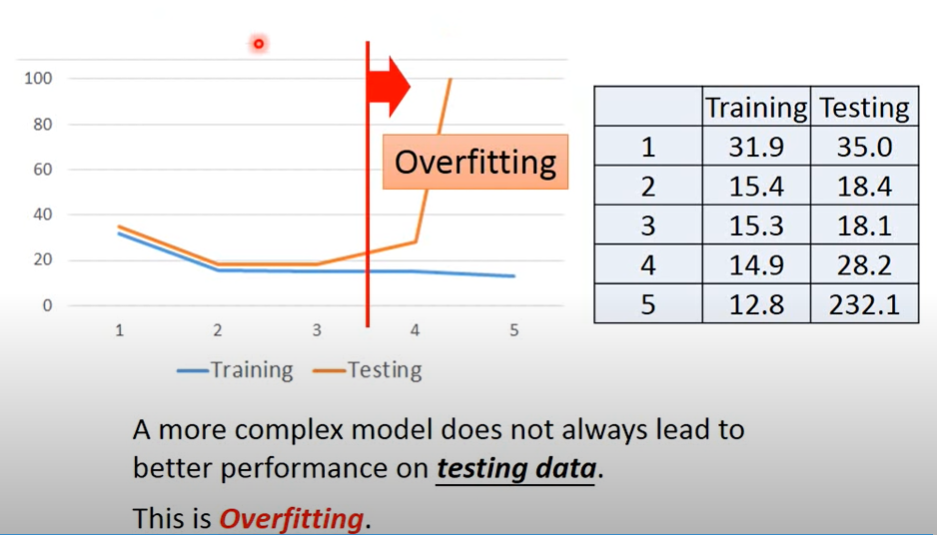
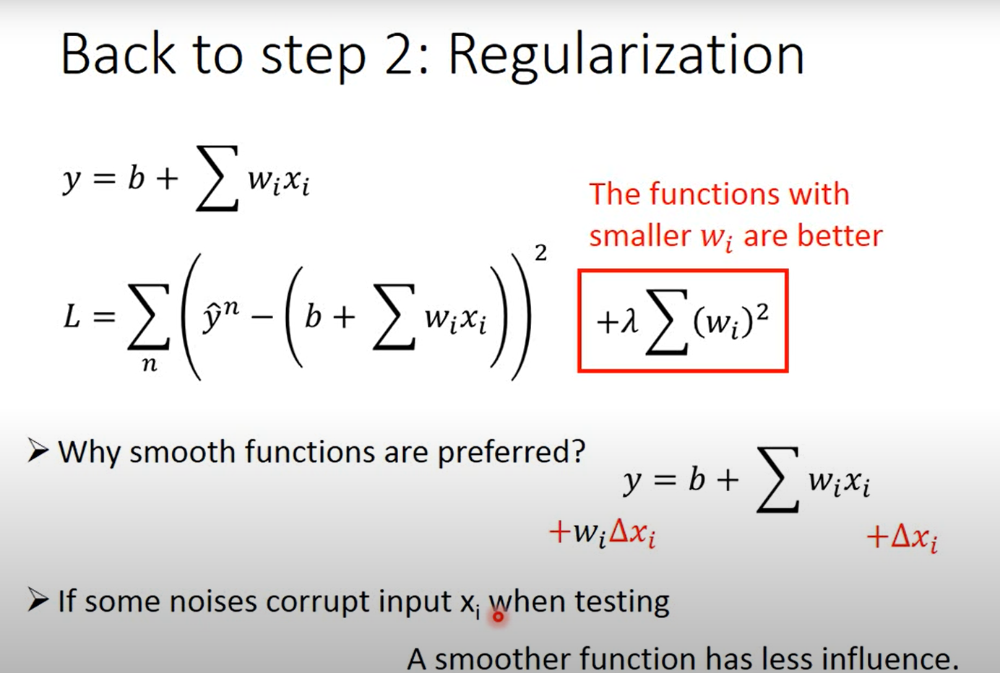
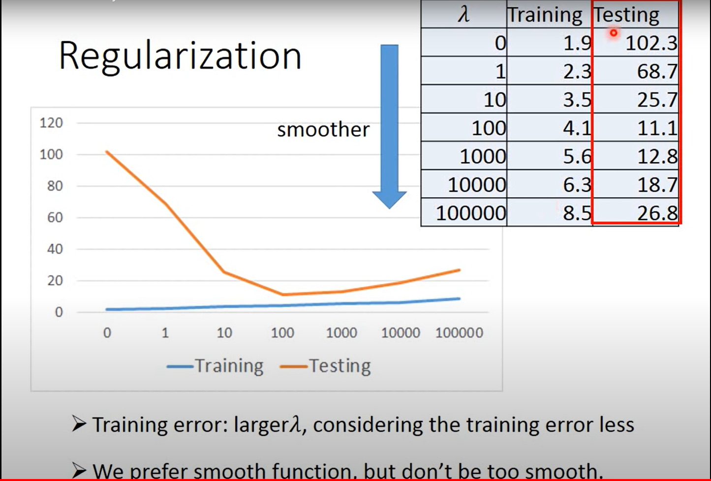

李宏毅老师2020年机器学习课程的一点学习笔记，作为重新学习机器学习的开始吧。
Intro
15次作业，使用Pytorch。
前沿研究：
- Explainable AI 解释原因
- Adversarial Attack 恶意攻击
- Network Compression 网络压缩
- Anomaly Detection 异常识别
- Transfer Learning 迁移学习
- Meta Learning 自学成才：学习如何得到学习算法
- Life-long Learning：终身学习

hand-crafted rules
- 永远无法超过创造者
- Lots of human effort
- 去github上安装pyenv，一个学习环境，防止装崩
- kaggle每个人五次预测结果
- github提交作业
Regression
线性回归基本的流程:
- 选取一种model或者function
- 选择一种cost function
- 在训练集上选取并使用梯度下降算法对model的参数进行优化
- 在测试集上对model进行评估
- 若对于结果表现不满意重新选取model, 或者审视数据重新处理(也算重选model)
complex!=better
模型在选择时候不一定越复杂效果越好,越复杂的模型通常会在训练集上表现越来越好, 但是在测试集上误差不一定会变好, 即有可能出现了overfit这种情况

在图中, 使用多项式进行线性回归, 横轴代表多项式的维度越来越高, 纵轴是平均误差值, 出现了先上升后下降的情形, 这代表出现了过拟合的情况
为了解决这个问题, 可以1.重新选择模型 2.使用regularization正则化手段
regularization
正则化在这里说的是增加一项进入cost function, 使得参数趋向于0, 这可以让每次的变动更小, 梯度下降的更为平滑, 换言之就是对输入的敏感程度大幅下降, 能帮助处理噪声造成的影响

正则化的两点好处:
- 变化幅度小,更平滑
- 对于噪声的抵抗力增强

但是,我们也要看到正则化的系数并非越大越好, 换言之模型的梯度下降也不应该过于的smooth
偏置项不需要加入正则化里面